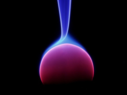

Une
miscibilité liquides/gaz
En marge du
chapitre IX des
Dialogues de Dotapea
[accès direct
Plasmas]
[accès direct Superfluide]
Ce dialogue part de
l'utilisation de bière
dans certains procédés de peinture
Jean-Louis : La quantité de CO2 que
l'on peut dissoudre dans la bière dépend de la température : plus c'est
froid, plus on en met. Symétriquement, plus c'est chaud, plus il en sort.
C'est le phénomène qui est à craindre si la planète se réchauffe : les
océans plus chauds rejettent le CO2 dissout et le phénomène s'auto-amplifie.
Le demi pression mousse bien parce qu'on fait monter la bière de la cave en
lui mettant une surpression de CO2.
Emmanuel : Le fait que plus un liquide est
froid, plus on peut y placer de gaz, est-ce lié à l'approche du
point critique ?
Jean-Louis : Non, pas que je sache. C'est une
question d'affinité chimique. Les corps ont une limite de solubilité plus ou
moins grande.
Emmanuel : A ce sujet, je n'ai jamais compris
comment il pouvait y avoir de l'oxygène libre, enfin de l'air ou d'autres
gaz, dans l'eau. Questionnement naturel je crois : dans un liquide on a
l'habitude de voir les bulles monter, pas rester sur place !
Jean-Louis : Oui, c'est la poussée
d'Archimède. Plus c'est gros, plus ça pousse.
Quasiment tout est soluble dans
l'eau. Le fer est soluble dans l'eau. Pas beaucoup, certes, mais c'est
mesurable. Les gaz sont donc aussi solubles dans l'eau, et dans d'autres
corps ou solvants. Si tu y réfléchis, c'est
étrange qu'un solide comme le sucre disparaisse dans l'eau, non ?
Seuls les gaz sont totalement miscibles entre eux. Tous les liquides ne le
sont pas (eau/huile), et tous les solides non plus. Mais on peut dissoudre
deux métaux l'un dans l'autre, ça s'appelle une solution solide. Il faut
juste chauffer.
Emmanuel : Apparemment, quand elles sont plus
petites, les bulles montent moins, et encore, pas sûr. Ces questions se posent en
peinture entre autres. Peut-être en météo, à l'inverse : comment se forment
les gouttes de pluie ? J'ai l'impression que ce ne sont pas des sujets
faciles.
Jean-Louis : Les gouttes ne peuvent se former
(on dit nucléer) que si il y a un germe, qui est généralement une poussière.
Dans un verre de bière les bulles partent généralement du
verre parce que c'est là qu'il y a
le plus de points de nucléation.
Un liquide très propre dans un verre très propre aura beaucoup de mal à
bouillir. Il faudra aller au delà de 100°C. C'est utilisé dans les "chambres
à bulles" en physique des particules.
Emmanuel : A propos de mousse, il y a eu
récemment une tempête dans l'Atlantique Nord. Les vents étaient localement
de 11 sur l'échelle de beaufort. Lorsqu'ils ont cette force, la mer devient
totalement blanche, dit-on. Les gaz contenus juste sous la surface semblent
remonter comme lorsque l'on sert un demi.
Comment charge-t-on un liquide de gaz,
pourquoi ce gaz est-il évacué par la même agitation sous forme d'écume ?
Jean-Louis : Ce n'est pas les gaz dissouts,
c'est le vent qui brasse la mer et forme une émulsion
air/eau. C'est stabilisé par tous les trucs qui sont dissouts dans l'eau de
mer. Si tu attends, l'écume se retransforme en eau et en vent...
Emmanuel : Le plancton (etc.)
vu comme émulsifiant air/eau ? C'est vrai : avec de l'eau douce
propre, pas d'écume. Quelques bulles tout au plus.
Jean-Louis : La question des bulles est
que mathématiquement (et donc physiquement), l'énergie nécessaire pour créer
une bulle est inversement proportionnelle à son diamètre. Donc en principe,
une bulle naissante extrêmement petite demande une énergie de nucléation
impossible à trouver. Mais si on part d'une impureté, une poussière, etc...,
on a déjà créé un certain volume dans le liquide. La bulle croît à partir de
cette inhomogénéité initiale.
Emmanuel : Peux-tu dire
quelques mots sur les plasmas ?
Jean-Louis : Un plasma est un état de la
matière dans lequel, schématiquement, les électrons ont quitté leur atome
d'origine et se promènent en liberté. C'est un milieu globalement neutre,
mais formé de particules chargées.
Si l'essentiel de l'énergie du milieu est sur les électrons, c'est un plasma
"froid", si les atomes sont aussi énergétiques, c'est un plasma "chaud". On
peut former un plasma en chauffant très fortement un milieu, c'est ce qu'on
observe en astrophysique, dans la couronne solaire par exemple, ou en excitant ce milieu
par une décharge électrique, comme dans les tubes fluorescents, les écrans
"plasma", les aurores boréales. Les particularités du plasma sont, entre
autres, une extrême réactivité chimique et physique, une sensibilité aux
champs
magnétiques et électriques.
[Lire un important
passage du chapitre XIX
des Dialogue de Dotapea]
Il y a eu de nombreuses expérimentations artistiques avec les plasmas, à
cause des effets spectaculaires que l'on peut générer, quoique on soit
toujours limité par un "contenant", généralement un tube à vide (tube à
décharge plasma). On ne peut pas
produire des plasmas
"libres", i.e. hors d'une enceinte, si l'on ne dispose pas de moyens
énergétiques considérables (irréalistes). Une utilisation amusante et
anecdotique des plasmas est l'effet Kirlian (dit aussi effet corona ou effet
couronne).
Emmanuel : Cela correspond à peu près aux
fameuses auras des "feux de Saint Elme"
et ce sont des effet spectaculaires. En termes d'utilisations artistiques
on peut mentionner les simples lampes à plasma qui peuvent être intégrées de manières
variées dans une oeuvre. Elles contiennent du néon ou du xénon. Peu de
choses les différencient des "tubes à néon"
si ce n'est une pression plus faible, une tension électrique plus élevée et
bien sûr une apparence beaucoup plus riche et changeante.

Version grand format, informations et droits de reproduction :
cliquer sur l'image
Tout autre chose, que dirais-tu du
superfluide ? S'agit-il d'une phase de la
matière ou d'un particularisme des fluides ?
Jean-Louis : Je ne suis pas expert en
superfluidité, mais à ma connaissance ce n'est pas considéré comme une autre
phase de la matière. Déjà il n'y a que l'hélium qui soit superfluide, ça
fait pas beaucoup de monde. Un peu de la même façon que certains métaux sont
magnétiques, d'autres supraconducteurs, il se trouve que l'hélium peut
devenir superfluide.
Emmanuel : En quoi le superfluide est-il à
la fois fluide et super ?
Jean-Louis : En tant que fluide il continue à
avoir une tension superficielle. Sa
superfluidité concerne sa viscosité qui
est nulle.